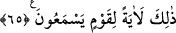

mü’minin baharıdır.”
Hazreti Ali (r.a.)’dan rivâyet edilmiştir: “Rasûlullah (s.a.)’i: “Fitne çıkacak” derken
işittim. “Bundan çıkış yolu nedir yâ Rasûlallah?” dedim. “Allah’ın kitabıdır. Onda
önceki ümmetlerin kıssaları, sizden sonrakilerin haberleri ve aranızda meydana
gelen olayların hükümleri vardır. O ilimdir, şaka değil, doğruyu yanlıştan ayıran
kesin sözdür. Âlimler ona doymazlar. O Allah’ın sağlam ipidir, hikmetli zikirdir,
dosdoğru yoldur. Ona dayanarak konuşan doğru söyler. Onunla hükmeden âdil olur.
Onunla amel eden ecir alır. Ona dâvet eden dosdoğru yolu göstermiş olur.” buyurdu.
[159]
Kur’an’ın ahkâmını açıklama görevi bütün insanlara, hakîkatlerini açıklamak ise
havâssa âiddir. Bu asâleten ve müstakil olarak Rasûlullah (s.a.)’e, ikinci dereceden ve
tâbi olarak da nesilden nesile O’nun vârislerine âiddir. Zâhir âlimleri, insanların
aralarında meydana gelen zâhir ihtilafları açık beyanla çözerler. Hal sâhibi bâtın
âlimleri ise onların iç (bâtınî) ihtilaflarını sahih keşifle çözüme kavuştururlar. Her
birinin kendisine başvuranı boş döndürmeyen kendilerine âid meşrebleri vardır. Onlar
dînin direkleri ve müslümanların sultanlarıdır.
Bilesin ki Kur’an, nasîhatlarından öğüt almak, kulu dâimî saâdete erdirir ve nefsânî
hazlardan da kurtarır. Hikâye edilir ki İbrâhim b. Edhem bir gün nâil olduğu mülke ve
nîmetlere sevindi. Sonra rüyasında bir kişi kendisine bir kitab verdiğini gördü. Kitapta
şöyle yazılıydı: “Fânîyi bâkîye tercih etme ve mülkümle de aldanma. Yok olacak
olmasa, içinde olduğun nîmet çok büyük. Allah’ın emrine tâbi olma konusunda acele et.
Çünkü Allah Teâlâ: “Rabbinizin mağfiretine ve cennetine koşun.” (Âli İmran, 3/133)
buyuruyor.” İbrâhim b. Edhem korku içinde uyandı ve: Bu Allah’tan bir tenbih ve öğüt,
hidâyet ve rahmettir.” dedi. Bunun üzerine Allah’a tevbe edip tâatla meşgul oldu.
Molla Câmî der ki:
Kim dünyânın işve ve nazına gönül kaptırırsa
Onun gurur ve cehâletinden sakın.
Himmet saçan kimsenin eteğine yapış,
Ki o, elini dünyâdan ve dünyâ ehlinden silkmiştir
Allah bizi ve sizi hevâdan korunmak ve hidâyet yollarına tutunmakla şereflendirsin.
65. Allah gökten bir su indirdi ve onunla yeryüzünü ölümünden sonra diriltti.